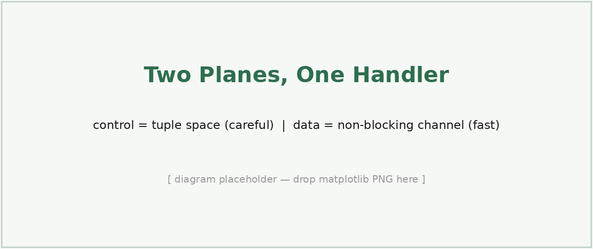
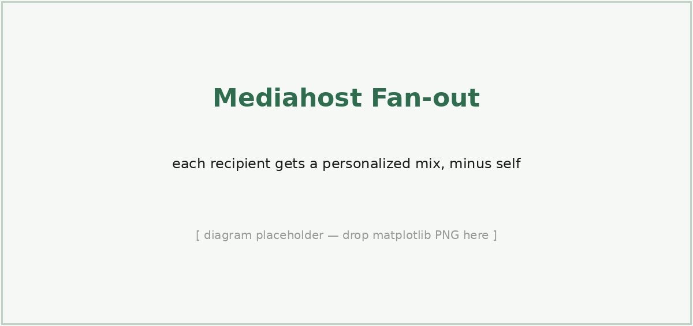
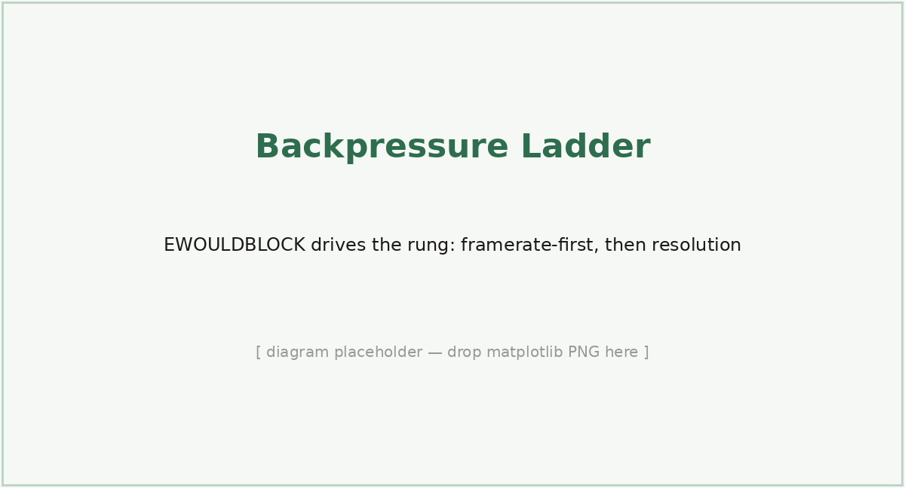

|
The FrogNet Living Network Magnum CroakusHow to Work Like a Frog The working companion to How to Think Like a Frog The FrogNet Living Network · Fawcett Innovations LLC ContentsBefore We StartHow to Think Like a Frog told you what FrogNet is and why it is built the way it is. It was a book about ideas. This one is about hands. We open with what FrogNet lets you do, because that is the part worth being sure you want before you wire anything up. Then we cover the hardware it runs on, how you hook up the network, and only then the software — installing a node, watching the mesh discover itself, and finally opening the hood on UnREST, the part that makes the whole thing more than a clever VPN. This is meant to be the book you keep open while you work, so it is heavy on examples. Nearly every idea is followed by something you can see or type. From the network chapter on, we run one deployment all the way through — a small family pond we call hometown — so the addresses mean something when they show up:
When we show a command, it is the command. When we describe what a daemon does, it is what the daemon does. Between us we have spent a working lifetime watching documentation drift away from the system it describes, and we would rather hand you something that runs. Part I What FrogNet DoesBefore any of the mechanics, here is the point of all of it — what you can actually do with a FrogNet, told in examples. None of this is a roadmap; every one of these is a pattern the system runs today. Read this part for the ideas; the rest of the book is how they are built. 1. The Idea, in One PageA FrogNet is a private network you own outright — a set of small boxes that find each other, organize themselves, and keep a shared, live picture of the world that every box can read and write. There is no company in the middle. There is no cloud account. The network forms itself from whatever boxes are reachable at the moment, over whatever links exist — a cable, Wi-Fi, a radio, a tunnel across the internet — and it keeps working when any of that comes and goes. In the precise sense a FrogNet is a fabric — one flat network plane laid over whatever bearers you have — and in practice it is usually wired together as a mesh. The shared picture is not stored behind the network on some server; it is the network, available at the same name no matter which box is holding it this second. And underneath everything is one accelerant — semantic compression — that sends only what changed since you last looked, which is what makes the whole thing fast enough to run real applications over links a phone would give up on. Sovereign, self-forming, the network as the database, fast by sending differences. Hold those four ideas and the examples below explain themselves. 2. What It Lets You DoWatch and act on the far side of the world, live. Put a sensor and a switch on a box in one city and a screen on a box in another, and they share one live data layer as if they were on the same bench. On April 17, 2026, Dan pressed a control in a web app on his bench in New York; the command crossed to a database 2,400 miles away in Seattle, and a physical actuator — a lamp — back on his New York bench threw. The whole loop ran over FrogNet, no cloud anywhere in it. That is the shape of it: read a sensor on the other side of the planet, decide, and drive something in the real world, in real time, with the data never leaving hardware you own. See live video from anywhere on the network. Any camera on any node is reachable from any other node — a doorway at the shop, a calf in the barn, a face on a call — as live video, peer to peer, with no call server in the middle. And because the media is adaptive, a feed on a failing link does not freeze and die the way a normal video call does; it steps down — full video, to reduced video, to clean audio, to text — and climbs back when the link recovers. You keep a picture as long as any byte can get through. Take it into the field — mobile teams and remote experiments. FrogNet does not need infrastructure to be there first, so it goes where the work is. Dan has driven a node trunk-mounted through Queens on a long-range radio, holding the link through buildings and the steel of the car the whole way — a mesh that moves. A field crew can carry a pond into a canyon with no cell service and still see each other, share positions, and coordinate. A remote experiment — an instrument rig on a ridge, a buoy, a weather mast — writes its readings into the shared layer and a researcher back at the lab reads them as they happen, then reaches back to change a setting. The lab and the field are on one network that happens to be spread across a wilderness. Stretch one uplink across a whole area. Say you have exactly one way to the outside world at a site — a single Starlink dish at the command post, the ranger station, the farmhouse. Plug it into one FrogNet node and the mesh spreads that one uplink outward over Wi-Fi and radio to every other node in range, and theirs in turn, so a whole camp or worksite or disaster area shares the one pipe. The semantic compression is what makes this practical: because the wire carries only differences, that single shared uplink goes much, much further than its raw bandwidth suggests — a narrow satellite link can feed a working network of dozens. Replace a stack of subscriptions with hardware you own. Photos, family chat, a shared calendar, a map of where everyone is, video calls — the things you pay four or five companies for every month, each holding a slice of your life — all run on your own boxes instead, private, with no per-person fees and nobody monetizing you on the side. The boxes find each other and the apps are just there. Keep an eye on someone without watching them. A box at an aging parent's house with a few passive sensors learns the rhythm of a normal day — when she's up, when the coffee runs, when she moves through the house — and tells the family, over the private network, when the pattern breaks. No cameras, no recording, no company watching. Dignity intact, peace of mind up. Keep working when the internet doesn't. A storm takes the towers; the power blinks; the internet is simply gone. Your phone's apps are bricks. The FrogNet boxes do not notice — each one is a whole network on its own, and any two that can see each other by Wi-Fi or cable mesh and share everything. When the internet comes back, they catch up. The box that handles the family photos in good weather is the same box that coordinates a household, a worksite, or a rescue in bad weather. Run real software over almost nothing. Because the network sends only what changed, it carries a full web application over a link slower than a 1990s dial-up modem — a steady data feed that would be hundreds of kilobytes collapses to a handful of bytes on the wire. That is what makes the narrow-link examples above more than wishful thinking: the patient vitals reaching the hospital ahead of the ambulance, the sensor feed coming off the ridge, the call that drops to text instead of dying — all of it rides links that conventional software treats as unusable. Put the intelligence where the data is. A model running on a box in your own pond — not in anyone's cloud — can see every sensor on the whole mesh at once, reason about them in the context of whatever job you gave it, and act: write a decision, drive a valve, raise an alert. It keeps working with the internet gone, on local weights and live readings, and your data never leaves your network. Several such specialists, scattered across the mesh, share the same live layer, so each one is aware of what the others see without any of them reporting to a central server. 3. On the RecordNone of the above is a mock-up. Every capability in this part has been exercised on real hardware over real links, and the load-bearing demonstrations are worth naming, because a claim with a date and a witness behind it is a different thing from a brochure. Most of the radio and field work is Dan's — the New York nodes, the long-range radio, the moving mesh are his bench and his car.
Part II Runs on What You HaveFrogNet imposes no hardware of its own. It is ordinary Linux software with ordinary dependencies, and the same release runs across a deliberately heterogeneous fleet — a five-dollar-an-hour cloud instance, a credit-card ARM board, a laptop two generations past its prime. This part is short on purpose: it sets the hardware envelope before we get to the network, so you can provision from what is already on the shelf and spend your attention on topology instead of a bill of materials. 4. One World, Any BoxA FrogNet node is standard Linux on standard hardware. The whole userland is Python, PHP, and bash riding the usual Linux services — a web server, a database,
The installer makes this painless. The release ships as one frozen world (you will meet it in Part IV), and if the box's processor does not match the architecture the world was built for, the installer rebuilds the parts that care — the Python environment — in place, so the same download stands up on an ARM Pi and an x86 mini alike. You do not keep a separate build per machine. One world, any box. Mixing them is the normal case, not a special one. In hometown, HomeBase might be an Intel mini because it holds the database and faces the internet; ShopBox a Pi; MomBox whatever was cheap at her end. They are peers regardless of what they are made of. Where capacity actually matters — who should host the shared database, who should anchor a video call — the network measures each box and elects the strongest fit on its own (you will see how in the Discovery part), so putting your beefiest machine in the mesh is enough; you never have to assign it a job. Capacity is a fact the network discovers, not a configuration you maintain. Part III Hooking Up the NetworkNow the wires and the radios. Before brokers and discovery and any of the clever software, there is the simplest thing two frogs can do: sit on the same link and find each other. The choices you make here — copper or radio, onboard chip or external antenna, local coordinator or one across the internet — decide the shape and the reach of everything above them. Get the physical layer right and the rest of FrogNet just rides it. 5. The Wire and the RadioFrogNet does not have its own idea of a network card. It rides whatever interface Linux presents — Wired Ethernet — the boring, correct defaultIf two nodes can be joined by a cable — directly or through a switch — do it. Wired is the highest-bandwidth, lowest-latency, most reliable bearer FrogNet has, and there is nothing to configure: plug both boxes into the same switch and they share a segment. WORKED EXAMPLE — ShopBox joins HomeBase by cable Run an Ethernet line from the house to the garage, both into the same switch. HomeBase is Onboard Wi-Fi — the node as its own access pointEvery Pi-class box has a Wi-Fi chip, and FrogNet uses it two ways: it can join an existing network as a client, or project its own — stand up an access point so phones, laptops, and other nodes associate directly to it. You never write a WORKED EXAMPLE — Turning the projected SSID off, after the fact You set the radio and country at install time; to change your mind later — keep a box wired-only so it never raises a network — you do not reinstall. Set the preference with the v4 setup helper and
That writes An external router or radio — when you need power and rangeThe chip soldered onto a Pi is fine across a room and tired across a yard. When the distance grows — the workshop across the property, the barn at the far fence — stop asking the onboard chip to do a job it was not built for and put the radio outside the box. Three honest ways, all of which look like an ordinary interface to FrogNet:
New transports plug in below the line; nothing above the line moves. That sentence is the whole architecture, and it is why this is a physical-layer decision you make with a tape measure and a power budget, not a protocol decision. The differentiator — transports multiplexed in one topologyRead that plug-in sentence again, because it is the key concept and it is easy to gloss over. Every other stack out there is defined by its transport — a LoRa mesh is LoRa, a VPN is its tunnel, ham packet is the audio modem carrying it. FrogNet is transport-independent, and more than independent: transports multiplex in the same topology. One machine is the tunnel gateway. Another is the 900 MHz gateway. A third reaches its upstream on And the transport is not hidden away from the layers above — it feeds them. The transport feeds directly into the processing algorithms, and those feed discovery and routing. The walk proves every candidate over the actual link and measures the round-trip time the bearer actually delivers, so a destination reachable by wire, Wi-Fi, and tunnel at once carries all of its paths ranked — winner installed, fallbacks already behind it (Part V). The routing table is a live map of what every transport is worth right now — which is why adding a bearer, or losing one, is ordinary weather instead of a redesign. The same property is what makes FrogNet mobile. A device does not care what the transport is, so when it comes in contact with another FrogNet it latches onto whatever medium is available — with no operator intervention in most cases. Dan's trunk-mounted node through Queens is exactly this behavior at traffic speed: the topology changed under the mesh block by block and the walk re-formed it, nobody touching anything. That is the differentiator with a human face: people do not have to be network or RF engineers to get things up and working in the field. The whole causal chain runs in one direction, and it starts at the bearer:
Each stage exists because the one before it feeds it. Survivability — the thing every other page of this book keeps demonstrating — is not a feature bolted on at the top; it is the last link of a chain that begins with refusing to care what the wire is. That combination — any transport, several at once, measured and multiplexed in one topology — is not an evolution of the network you already have. It is the next generation of it. Connectivity is accomplished by transport, not the other way around. 6. Gateways, Children, and PeersEvery node sits somewhere in a small family tree relative to its neighbors. On a link, the nodes it touches directly are its peers. Below it, on segments it routes for, are its children, and their children are grandchildren. Above it, the node it reaches the wider mesh through is its parent. You do not assign these; they are just the directions the network runs in. Here is hometown drawn as the tree it actually forms: WORKED EXAMPLE — The hometown topology
The four scopes — Self, Lillypad, Chorus, PondThose family words point at one nested idea you meet everywhere in FrogNet: four scopes of reach, each wrapping the last. Self is a single node alone. Lillypad is a node together with everything directly attached to it — its sensors, its platforms, the phones and laptops on its segment. Chorus is a named group of nodes that belong together across the pond, wherever they physically sit — “family,” “ops,” the circle the broker actually meshes over the internet. And Pond is the whole network, every node that belongs to it. A tuple, a service, a name is always published and read at one of these scopes, which is why the same word — “the database,” “a sensor” — resolves correctly whether you mean one box, one lillypad, one group, or the entire mesh. Gateway machinesA gateway is a node with a way out that is not itself FrogNet — a real uplink, a non-10 address on one of its interfaces. HomeBase is the gateway here: its Resolving names, and the default routeTwo things are worth fixing in your head before discovery (Part V) makes sense, because they are how FrogNet coexists with the networking you already know rather than replacing it. The first is name resolution. FrogNet does not run DNS for the mesh — it resolves the mesh's own names through Discovery is what fills that file — non-destructively. Every time the topology changes, the walk recomputes the mesh and writes the result into The second is the default route, and FrogNet leaves it alone on purpose: the default route is how a node gets off the FrogNet and out to the upstream — the internet, or really whatever happens to be out there. Discovery installs routes only for the mesh, the 7. How a LAN Forms — and SplitsA LAN in FrogNet is not declared. It is the set of nodes that can currently reach each other without a relay or tunnel, recomputed from reality every time the reality changes. Nodes that come to share a segment form a LAN; nodes that lose their shared path split; and the same machinery handles both without anyone telling it which is happening. WORKED EXAMPLE — Forming, then splitting HomeBase runs alone. You plug ShopBox into the switch; on its next walk HomeBase probes its wire, gets an answer from The lesson for the operator: your connection choices are your reliability and your reach. A wired core that does not flap, with radio only where you need mobility or distance, gives you a LAN that forms once and stays formed. Lean on a marginal Wi-Fi link and you will watch the LAN form and split every time someone runs the microwave. Choose the physical layer up front, deliberately, and the living network above it has an easy life. Part IV Installing the SoftwareHardware chosen, network planned, you are ready to lay down the software. A FrogNet node does not begin life on a network — it begins as a tarball, a whole little world sealed up, and an installer whose only job is to unpack that world and tell the box who it is. By the end of this part you will have a running node and you will know every file that holds its configuration. 8. The World and the InstallerA FrogNet release is two files side by side: a world tarball, WORKED EXAMPLE — Installing HomeBase, the first node
Three more switches matter for the radio from Part III: 9. What the Installer DoesSix phases. Knowing them tells you where to look when something goes wrong.
When the box comes back up it is already a network — its own DNS, web server, database, daemon, and proxy — serving a dashboard and holding data with nothing else plugged in anywhere. Telling a healthy node from a sick oneWhen a node misbehaves you have honest signals before you start reading code. FrogNet_monitor (Part VI) is the first stop: it shows every node the mesh can see and, per peer, the live numbers — echo, round-trip time, cache-hit rate, bytes saved — so a node gone quiet or running a cold cache stands out at a glance. Underneath it, two probes mean different things and must not be confused: the echo answers only “who are you” — identity — and a node can echo perfectly while carrying no traffic; the liveness check is the bidirectional ping-pong the discovery walk runs, and a candidate counts as reachable only when its daemon answers it. “The echo works” is not “the node is healthy.” And when you do go to the logs, read the whole journal rather than one unit — the proxy, the daemon, the tunnel daemon, and discovery each log their own half of the story, and a fault in one usually surfaces as a symptom in another. 10. Configuring from the BrowserNot everything has to be a command. Every node serves a setup web page that drives the same operations the command line does, through a small helper (
Everything the page does, the helper does on the command line too, so you can script any of it. The page is just the friendly face on the same machinery. 11. The Configuration FilesFrogNet keeps its configuration in a handful of plain files under
The two you will actually touch are Part V DiscoveryA node knows itself, its LAN, and its broker. How does a pile of boxes become one coherent network — no map, no administrator, no plan? It discovers itself, and it does so with its own web stack: discovery is HTTP, riding the same compressed proxy your applications ride. 12. We Eat Our Own CookingTwo ordinary web endpoints do almost all the work. The echo answers “who are you?” — a node reporting its name, address, and the shape of its interfaces. getHosts answers “who do you know?” — returning the hosts that node has already discovered. Both are plain HTTP, both compressed by the same engine as everything else. Discovery is FrogNet making HTTP calls to FrogNet. WORKED EXAMPLE — What getHosts hands back
That pays off twice. Discovery inherits every property of the transport — the compression, the parallelism, the transport-agnosticism — so the mesh finds itself over a 4800-baud radio link as readily as over Ethernet. And there is no second networking stack to maintain. The network discovers itself with the same tool it serves applications with. The proxy owns port 80What makes “we eat our own cooking” literally true is a pair of services that come up with the node and sit underneath all of its HTTP: the proxy and the daemon. The proxy takes over port 80. Every HTTP request crossing the node's interface — an application's, a browser's, and discovery's own echo and getHosts calls — arrives at the proxy first; nothing speaks HTTP on a FrogNet node without passing through it. That is why discovery gets the compression and the transport for free: it is not special-cased, it is simply more port-80 traffic, handled the same way as everything else. The first thing the proxy does with a request is look at where it is bound, because not everything gets the FrogNet treatment. A request addressed to a FrogNet address — the 10-net — enters the semantic path: a candidate for compression and the established-socket transport. A request addressed anywhere else — the public internet, a printer on the house LAN, anything outside 10/8 — is simply passed through, forwarded to the real upstream untouched. The proxy is in the path for everything, but it does semantic work only for FrogNet's own traffic; the rest it gets out of the way of. For a FrogNet-bound request, the proxy hands it to the daemon — the worker pool that does the actual semantic work: learning templates, running the UnREST handlers, collapsing an exchange to SAME, DIFF, or FULL. It reaches the daemon over a dedicated socket — a loopback connection on a fixed port, held open for fast, direct hand-off — and the daemon hands the result back. The proxy is the front door; the daemon is the engine room. The daemon considers the request and, for content the node itself holds, calls the local Apache and its database to produce the answer; for a peer's content, it carries the exchange over the wire instead (next). The first time the daemon meets a given shape it holds no template for it, so it learns one on the spot and sends the whole structure — a FULL; from then on every exchange of that shape collapses to a SAME or a DIFF against it (Part IX details the learning). All of this is the nominal path — ordinary content, served or fetched and compressed. UnREST Unleashed changes what happens at the handler — a live stream, a game — but the shape of it here, the intercept, the 10-net decision, and the hand-off to the daemon, stays the same. For a peer, the wire looks nothing like HTTP, and the two are kept strictly apart. HTTP is the protocol the proxy intercepts on port 80, locally. FNWP-11 — the FrogNet Wire Protocol — is what actually crosses between nodes. When the proxy forwards an exchange to another node it does not open a fresh HTTP connection per request; it carries the exchange over an established socket held open to that peer's proxy — a long-lived, keep-alive connection reused across many requests — and frames it in FNWP-1: length-prefixed frames with a small set of opcodes (a full request or a repeat; a response that is SAME, a DIFF, or a raw body; a HELLO to open the channel). Those opcodes are how the SAME/DIFF/FULL compression actually rides the wire. The application spoke ordinary HTTP into port 80; what left the node was FNWP-1 on a standing socket; the peer's proxy turned it back into HTTP on the way in. Neither application ever saw the wire. (FNWP-1 itself — its framing, how conversations fan in and out, and how they interleave on one socket — gets its own treatment in Part IX.) Both come up as part of bringing the node onto the network, wired to what discovery learns — the proxy takes port 80 on every interface discovery deems eligible, so the takeover follows the live shape of the mesh. This is the concrete machinery under two claims made elsewhere in this book: that compression is infrastructure that needs no application changes (Part I), and that discovery rides the very same path applications do. Own port 80, and every HTTP exchange on the node is yours to compress, route, and reconstruct — invisibly. 13. The WalkA node builds its picture in waves, outward from itself. Wave one is everything it can touch immediately — the addresses on its own wire, its peers. Wave two is their children: it asks each peer, by getHosts, who it can reach, and reaches for those. Wave three is the grandchildren. The walk is bounded to a small depth, because past a few hops the relaying is someone else's job. WORKED EXAMPLE — HomeBase walks hometown
Each candidate is proved before it is trusted — a light bidirectional liveness probe, not an application health check, and a candidate counts only if its daemon answers. A node describes its own segment membership in its echo rather than letting anyone infer it from an address, so the picture is self-reported, never guessed. As the walk crosses from a peer to that peer's children it remembers the path it came in on, so the return route for everything below a peer is known, not assumed. A gateway, walked into, hands back its whole downstream subtree; a LAN-child withholds the path back up toward its parent. Those two rules — gateways transit down, children do not advertise up — keep the walk from folding into a loop. .2 proves, .1 carriesA node's identity and all of its real traffic ride its Winning routes, ordered by RTT — the network tunes itselfThe walk does more than build a name list. As it proves each destination it measures the round-trip time to it — and a destination can be reachable by more than one path: directly over the wire, over Wi-Fi, by relay through a peer. When the walk finishes, the node installs the routes it found ordered by RTT. The fastest path to each destination wins and becomes the preferred route; the slower paths are installed behind it as ranked fallbacks. Because this happens on every walk — and a walk happens every time the topology changes — the whole network continuously settles onto its fastest available paths with nobody tuning anything. It is self-optimizing by construction. The same ordering makes failure cheap. If the node behind a winning route drops off, there is nothing to recompute in the moment: you remove the first route, and the next-best path by RTT — already sitting in the table as a fallback — takes over instantly. The expensive work, finding the paths and ranking them, was done at walk time; the failover is a single deletion. WORKED EXAMPLE — Two paths to ShopBox, ranked by RTT
14. Selecting the Service HostsOnce a node knows who is out there, it must agree with everyone else about which node holds each service the mesh needs in exactly one place. This is election, deterministic by design: for a given service, every node scores the same advertised facts with the same rule, so they all land on the same winner with no vote, no messages, no coordinator. A node advertises what it can do — compute, memory, storage throughput, codec support — and the math does the rest. This is platform independence from Part II at work: drop a stronger box into the mesh and it simply wins the roles that want strength, because the network measured it. And there is not one election — there are as many as there are services. Host selection is itself one of UnREST's virtual functions (you will meet the handler in Part X): each service implements its own selector, so different services choose by different rules. The DatabaseHost selects the most-capable box that is actually running MySQL — it is memory-bound, so the most RAM wins, with the highest address only as a tiebreak (Part VI). A media host, which has to sit on the same wire as the people it serves, selects by locality and capability among directly-attached neighbors. A board-game host selects by whatever a game needs. Every node runs a given service's selector and reaches the same answer for that service — deterministic per service — but no two services are obliged to pick the same way. Adding a new kind of service host is implementing one virtual function, not editing a central election. Election is scoped. A service the whole mesh shares is chosen across the pond. A service that must stay on the local wire — live media is the example that bites you if you get it wrong — is elected only among directly-attached neighbors, so it can never land on a node you reach only by relaying. A small stability margin keeps a marginal challenger from constantly unseating a healthy incumbent. One elected service is special enough to get its own part. Part VI The DatabaseHostEvery FrogNet has a beating heart it never planned for: a single floating database the whole mesh reads and writes, reachable at one name no matter which physical box holds it this second. Understanding how that name moves — and why moving it is safe — is the key to understanding how FrogNet survives being torn in half. 15. One Name, A Moving TargetThe shared scratchpad lives at one address: WORKED EXAMPLE — Who holds the database in hometown
And here is what makes it living: that calculation is redone every time the topology changes. The merge — the same machinery that runs the walk — recalculates the DatabaseHost and rewrites it into every node's hosts file on every pass. No TTL to expire, no nameserver to consult, no propagation delay. The instant the reachable set changes, the answer changes with it, on every box. Reading and writing it — data on the URLAn application does not open a special connection or speak a special protocol to use the shared database. It makes an ordinary HTTP call, and the data rides on the URL. FrogNet layers a small, custom query vocabulary onto one plain endpoint —
A tuple is humbler than the word suggests: a named row with three parts. A name that is its key — a sensor's full name, like WORKED EXAMPLE — A barn sensor writes; the monitor reads
That reader is real. FrogNet_monitor, the network's info center, is a terminal dashboard that does exactly this: it lists every node, shows each one's live telemetry — echo, round-trip time, cache hit rate, bytes saved — and lets you drill into a node to see its sensors and open a single reading in full. It writes nothing and runs nowhere special; it is just another reader of the shared store, talking to And this is the seam where UnREST picks up: those URL parameters, merged with any fields in the body, are exactly the structure it learns once and then never re-sends. The data goes in on the URL by name; UnREST makes sure only the part that changed ever crosses the wire. 16. Split, Merge, and Why It Is SafeTear the network in half — the link between the house and the garage drops. The mesh splits into two islands, the merge fires on each side, and each re-elects its own most-capable database node. WORKED EXAMPLE — The DatabaseHost follows the split
Each island has its own DatabaseHost, its own complete picture for the frogs it can still reach. Neither side pauses or errors; applications on both keep asking for the same name and keep getting an answer. When the halves rejoin, the merge fires again and the most capable among all of them wins. And — the decision the whole thing rests on — there is no reconciliation. Nobody replays a log, merges two histories, or negotiates whose reading wins. The old data ages out; new writes land on the new host because that is where the name now points. You can only get away with that because of what the transient database is: it holds current state, not history. That data is time-ordered (newest is what matters), idempotent (sending it twice is harmless), and forgiving (one missed sample among thousands means nothing). For data shaped like that, a thirty-second consensus round over a flaky link is worse than expensive — it is wrong, because the data it so carefully agrees on is already stale. So FrogNet does not agree. It keeps the current truth available, wherever the network happens to be standing. This is the Part I promise — keep working when the internet doesn't — made mechanical. The storm takes the towers and the pond simply splits into the islands that can still see each other, each electing its own heart and carrying on; when the line comes back the islands merge and the name resolves wider again. The box that handles the family photos in good weather is the box that coordinates the household in bad, because to FrogNet the outage was never an error to recover from — only a smaller world for a while. Part VII Connecting Across the InternetEverything so far stands on one local network, complete on its own. This part is how a pond reaches past the LAN: nodes that cannot see each other directly, and whole sites in different cities, joined over the internet. Two pieces do it — a broker that introduces frogs that cannot find each other, and the encrypted tunnels it hands out to carry the 10-net between them. Neither disturbs anything above: a tunnelled peer looks like just another interface, and the living network on top behaves exactly as it did on one wire. 17. The BrokerA single node is a network. Two nodes on the same wire find each other with no help. The broker exists for the third case: nodes that cannot see each other directly and need an introduction. It is the one piece of FrogNet that can live in the cloud, and the one people most often misunderstand. The broker is stateless — a rendezvous, not a record. What it seems to know — who is in which pond, who is in which chorus — it holds no authority over and keeps nothing the network depends on: all of it is re-derived from nodes registering and polling, and a node that stops polling simply ages out. Wipe the broker clean and the next round of polls rebuilds its whole picture. So when a node polls, it is not asking a database for the truth; it is announcing itself and getting back the current membership to reconcile against. That poll-and-reconcile is the entire control loop. And the broker is never a party to the data: on one LAN, nodes talk directly and the broker never sees a byte; across the internet, the WireGuard tunnels it hands out meet at the broker, which relays the encrypted bytes without holding or reading anything. A pond whose broker goes dark loses only the ability to onboard a stranger or open a new cross-internet tunnel; everything already formed keeps running. One egress per nodeA LAN can have more than one way out — two houses bridged, a wired uplink beside an LTE backup, several nodes each with their own internet — so a pond may have several egress points to the outside, and to the broker, at the same time. Any one machine, though, uses exactly one. A node has a single default route, and that route resolves to a single way out. If the node has its own direct upstream — a default route whose next hop is a real, non-FrogNet address — it reaches the broker itself, and it is the kind of node that registers tunnels. If its only path out is through a mesh peer — its default route points at another frog's Where the broker can live — and what it runsThe broker has exactly one hard requirement: it must sit at an address every participant can reach. Nodes open connections to the broker, never the other way around, so the broker has to be visible by IP to all of them. For a pond spread across the internet — nodes behind home routers and NAT — that means the broker needs a publicly-routable IP, usually behind a DNS name (hometown's is Where you put it is otherwise open. We run ours on a DigitalOcean droplet — a few dollars a month buys a small cloud machine with a fixed public IP and a DNS name, which is the easiest way to give a far-flung family or team a stable place to rendezvous. But nothing about FrogNet requires DigitalOcean. Any small VPS works — Linode, Vultr, a corner of an AWS account, a friend's server. So does a box in a colo, a home server on a static IP with the broker's port forwarded, a machine inside a corporate VPN for a fully private pond, or — for a LAN-only deployment — one of the mesh nodes itself. The only test is the one above: can every participant reach it by IP? And it is a light thing to run. Its working set — the ponds, the choruses, who has registered, the tunnel assignments — sits in a single SQLite file ( WORKED EXAMPLE — hometown's broker, on a droplet
Pointing a node at a brokerA node learns its broker from one small file, WORKED EXAMPLE — HomeBase's pond.conf
A timer, Bootstrapping and handing out keysThe first node to reach a fresh broker bootstraps it — claims it and gets the admin token to mint credentials for everyone else. After that, joining is two steps: an admin mints a passcode, a node redeems it for a long-lived group token. WORKED EXAMPLE — Standing up hometown, then adding Mom
What lands on MomBox is a The local broker — short-circuiting the LANA broker does not have to live across the internet. Point WORKED EXAMPLE — Local broker vs WAN broker
A WAN broker mints tunnels to connect nodes that cannot otherwise reach each other; a local broker mints them to short-circuit a long path between nodes that already can. Same software, same file — the address you put in it, and the problem the tunnel solves, is the only difference. 18. The TunnelWhen the broker decides two frogs should have a direct link they do not already have — they cannot reach each other across the internet, or the only path between them runs through too many hops — it does not carry their traffic; it hands each one a channel: a small description of the other side. A channel names the far node's endpoint (a reachable address and port), its public key, a private transit address drawn from Two things about that So the routes are the simplest thing that could work: WORKED EXAMPLE — A channel becomes an interface and a route
The tunnel daemon owns the lifecycleTunnels are not discovery's job. A dedicated tunnel daemon owns them, on its own loop: on a broker event it brings the interfaces up and installs their routes; a periodic reconciliation rebuilds any interface that has vanished, within tens of seconds; on startup it tears down dead leftovers so a reconnect always starts clean. It pointedly never runs 19. One Overlay, Many SitesA channel carries more than the far node's own wire. The broker lists, for each peer, the subnet it owns plus the subnets it relays — so a single tunnel to a far node can carry that node's entire side of the world. A node that relays for others is a forwarder; on a forwarder each tunnel interface holds several routes, not one. Routes to the forwarder's own WORKED EXAMPLE — Two sites, one overlay
Nothing above the route table changes. The discovery walk of Part V ranks a tunnelled path by its round-trip time exactly as it ranks a wired one, so when a destination is reachable both directly and over a tunnel, the faster wins and the other waits as a fallback. The proxy forwards over Choruses — groups that span the pondThe broker does not mesh a whole pond blindly; it meshes a chorus — a named group within the pond, the What keeps it privateTrust in FrogNet rests on a few plain mechanisms, not a security product bolted on top. Identity is the GUID minted at install in Part VIII Sensors and AI PlatformsThe capabilities in Part I — the sensors across the world, the offline AI — run on machines that are not, themselves, FrogNet nodes. They are platforms: separate boxes that install just enough FrogNet to reach the plane, then do their own work as clients of the shared database. This distinction is the one that trips people up, so this part draws it sharply. 20. The Sensor PlatformFrogNet nodes provide the infrastructure. A sensor platform uses it, and is not a node — it joins no election and holds no role. At heart it is an aggregator and a storage pump: it collects readings from the physical world and writes them into the transient database as sensor rows, through the standard proxy path. That is the whole job. A typical one runs a fistful of cheap microcontroller boards over Bluetooth or Wi-Fi into a small concentrator — a Pi Zero — which batches and posts them up into the mesh. A radio bridge pulling a Meshtastic or LoRa mesh off the air and writing its packets in as sensor rows is the same shape. It does not need to be the DatabaseHost; it does not run the apps that read what it collected. It pumps; everyone else reads. From there any node — or any AI — queries the readings by name, and one trickle of upstream bytes feeds dashboards, alerts, and reasoning alike. The FrogNet_monitor info center from Part VI is the reading end of exactly this — it pulls a node's rows back out by name, while the platform that wrote them neither knows nor cares who is watching. 21. The AI PlatformAn AI host is a machine running a local model harness — Ollama, on your own hardware, inside the pond, not in anyone's cloud. A Knowledge Pack frames the same harness into a specialist: a petroleum geologist for a wellfield, a hydroponic gardener for a grow room, an emergency-response coordinator for a disaster net. You tell it which sensors matter and hand it a small set of HTTP calls against the transient database — list the sensors, read them, write observations and decisions back — with its writes fenced into its own namespace. There is no special AI plane; it is just another participant reading and writing tuples, exactly like the sensor platform, exactly like a dashboard. Internet up, the model can augment itself; internet gone, it runs on local weights and live tuples and, where you permit, drives actuators on what it reads. Because every AI shares the same floating data layer, several specialists scattered across the mesh are aware of one another's observations without reporting to any coordinator — connected, they see each other's state through the shared database; partitioned, each works on local state; reconnected, the shared state reconverges and they see each other again. The contrast with cloud AI is the point: cloud AI sends your data out for someone else's model to judge; FrogNet keeps the data in your pond, runs the model on your hardware, and lets the output drive your actuators. Same capability, opposite custody. This is two Part I promises at once. It is put the intelligence where the data is, literally — the model sits on the mesh it reasons about. And it is the gentler one, keep an eye on someone without watching them: passive sensors at an aging parent's house write the rhythm of a normal day into the shared layer (the sensor platform, just above), a local specialist reads that rhythm and flags only the break, and nothing — no camera, no recording, no company — ever leaves the pond. The watch is a tuple read on hardware the family owns. Part IX UnREST CoreEverything to here has been plumbing — good plumbing, but plumbing. The next two parts are the idea the plumbing exists to serve, and they come in two layers. This one, UnREST Core, is the built-in default: the machinery every exchange on a FrogNet uses for free, with nobody writing a line. It rests on a single move — stop thinking of a network as something that carries messages and start thinking of it as something that shares memory — and it makes that move practical with two things: compression that sends only what changed, and a wire that never sits idle. The part after it, UnREST Unleashed, is what you build on top of this floor. 22. From Messages to MemoryOne idea ties both layers together, and it is worth meeting now: it is all object-oriented. Every exchange on a FrogNet is processed by a handler — an object conforming to one interface, with a few virtual slots it may fill: how to compress, whether it holds a role, how to announce itself. UnREST Core is simply the default behavior of that interface. The ordinary content handlers fill the one slot that matters for compression and inherit do-nothing defaults for the rest, which is why every JSON reply and sensor read gets SAME / DIFF / FULL and the fanned transport without anyone subclassing anything. The object model only shows its full reach when you override more of it — an entire media protocol, a whole game — and that is UnREST Unleashed, the part after this one. The handler interface itself is laid out there, in “The Object-Oriented Handler.” The web is built on messages. A client composes a request, ships the whole thing, waits; a server parses it, rebuilds context it almost certainly already had, composes a whole reply, ships it back. Every exchange re-states the world from scratch. Stateless by design — a choice that made sense when memory was scarce and links unreliable, and nobody has questioned since. UnREST questions it. The model it borrows is Linda — David Gelernter's tuple spaces, 1985 — where independent processes never address each other at all. They write values into a shared associative memory and read them back by pattern. A producer drops a reading into the space without knowing who will read it; a consumer reads by pattern without knowing who wrote it. Decoupled in time and identity. FrogNet's transient database is that space across a network. Two parties that share memory do not re-send what they both already hold — they reconcile the difference and nothing else. A message system re-transmits structure on every exchange; a memory system transmits structure once and values forever after. That is a different theory of what crosses the wire. 23. The Accelerant — Semantic CompressionThe memory model only works because something underneath makes “send only the difference” nearly free. That something is BLDC-1, FrogNet's semantic compression, the baseline accelerant the whole architecture stands on. It runs three states over a learned template: SAME, DIFF, and FULL. The first exchange of a structure goes whole — FULL — and both sides learn its template: its shape, which parts are fixed and which vary. After that the sender says SAME and sends almost nothing when nothing changed, sends DIFF with just the changed values against the shared template, and falls back to FULL only when the structure itself changes enough that the template no longer fits. WORKED EXAMPLE — A sensor reading on the wire, three exchanges running
Notice this is the same move as UnREST, one layer down: the codec does not transmit what the far side already remembers, only the reference and the diff. “Exchange memory, not messages” is the architecture; SAME/DIFF/FULL is that principle on the wire. They are the same idea at two scales — which is why discovery, coordination, and application traffic all get the benefit for free, and why a real web application runs over a link slower than a 1990s modem. How a template is learnedThe whole scheme rests on both ends sharing a template, so the obvious question is where the template comes from. Nobody writes one. It is learned from the first real exchange of its kind. The first time a given request or reply flows through — a sensor upsert, a getHosts, a particular dashboard query — the proxy looks at its actual shape and records a template: which parts are fixed structure and which are the values that vary, what type each varying field is (a string, an integer, a float, a boolean, a nested object), and the order they appear in, including any that ride on the URL. That template is the FULL from a moment ago; learning it and sending it are the same act. From then on the structure is known on both sides and only the values move. A template has an identity, so the right one is always picked. It is keyed by the stable parts of the exchange — the operation and the fixed query keys — not by the values. A temperature reading and a humidity reading from the same kind of sensor share one template; the number is just a value slotted into it. This is why a brand-new sensor that has never been seen still rides an existing template the instant its readings match a known shape: the template was learned for the shape, not for the specific sensor. WORKED EXAMPLE — One template, many readings
The cache — what each side remembers“The reference both ends hold” is a cache, and it has layers. The closest layer is the reference values: for each peer and each kind of exchange, the proxy keeps the last canonical values it sent or received. That is what a DIFF is computed against, and what a DIFF is applied to — the memory that makes “send only what changed” possible at all. Above it sits a small in-memory cache of SAME answers: when a reply comes back SAME, the proxy serves the body straight from memory instead of going back to the database for something it already has, so a SAME never touches the disk on either side. And underneath, the references are written through to durable storage — the node's own database — so they survive a restart. A node that reboots does not relearn every template and reference from scratch; it loads what it knew and picks up where it left off. The cache is therefore both hot and durable: fast in memory for the steady state, persisted so a power blink does not cost the network its shared memory. It is the same principle as everything else in FrogNet — keep the current truth close and reuse it — turned on the compression machinery itself. 24. FNWP-1 — The WireBLDC-1 decides what to send — a SAME, a DIFF, a full body. FNWP-1, the FrogNet Wire Protocol, decides how it travels: how those frames are packaged, how many conversations share a socket, and how the replies find their way home. If BLDC-1 is the language, FNWP-1 is the envelope and the postal system. It is what rides the established sockets between node proxies introduced in Part V. The pathway, end to endTwo players do the work here, and it matters which does which. The handler, running the BLDC-1 codec, decides what bytes represent the exchange; FNWP-1 carries them. Follow one request from an application on this node to the data on a peer and back:
Where SAME and DIFF are decided matters: at the handler, on each side, by the BLDC-1 codec — never on the wire. When a side has an answer to send, the codec compares the canonical answer — the values it carries against the template both ends learned, not its raw bytes — to the reference it holds from last time. Match, and it sends SAME: almost nothing. A few values moved, and it sends a DIFF of just those. The structure no longer fits the template, and it sends a FULL. (Two answers that differ only in incidental formatting are the same canonical answer, and cross as SAME.) A short request hash on the frame tells the far side which reference this is measured against, so the two ends never disagree about what “last time” was. FNWP-1's job begins only after that verdict: it frames the SAME, the DIFF, or the FULL, tags it with a sequence number, and puts it on the socket. On arrival the reconstruction is exact precisely because both sides kept the reference — the receiving handler takes its copy of the last canonical answer, applies the diff, and has the full message again, which it hands to its origin or back to the waiting application. So every hop is one handler turning a full message into a verdict against a shared reference, and the handler on the far side turning that verdict back into the full message. That is the whole pipeline: incoming message, to handler, to FNWP-1, to the other side's handler, to the other side — and the reply home along the very same path. The codec decides the content; the wire moves it. The frameEvery FNWP-1 message is a length-prefixed frame: a small header giving the length, an opcode, and a sequence number, followed by the body. The opcodes are a short list — a full request or a repeat of a known one; a response that is SAME, a DIFF, or a raw body; a HELLO to open a channel; an ERROR. The length prefix means a reader always knows exactly how many bytes to expect before the next frame begins, which is what lets many frames share one stream without ambiguity. The sequence number is what lets them share it at the same time — the next two ideas. Fan-in: many conversations, one socketA node rarely has just one thing to say to a peer. A dashboard is polling, a sync is running, three sensors are being read — all toward the same peer, all at once. FrogNet does not open a socket per request. They fan in to the peer's one established socket: the writer sends their frames one at a time down the single connection, and because each frame carries a sequence number, it does not have to wait for one reply before sending the next. Several requests are in flight on the one socket simultaneously, and the proxy keeps a small pending map — sequence number to waiting caller — so it knows who is owed what. WORKED EXAMPLE — Three requests in flight on one socket to ShopBox
Fan-out: matching replies homeThe replies come back interleaved, and not necessarily in order — a small SAME for the sensor read may return before the larger file list. That is fine, because every reply carries the sequence number of the request it answers. The reader pulls each reply off the socket, looks its sequence up in the pending map, hands it to the caller that was waiting, and drops it from the map. The frames went out fanned-in on one socket and come back fanned-out to the right callers, sorted by nothing more than a number on each frame. WORKED EXAMPLE — Replies arrive interleaved, matched by seq
One more fan-in trick: if two callers ask the peer the exact same thing while the first is still in flight, FrogNet does not send it twice — the second is coalesced onto the first request, and both are woken by the one reply. Identical work collapses to a single exchange on the wire. Independent channel sets — keeping streams from blocking each otherSharing one socket has a cost: everything on it shares one TCP connection, so a stall or a lost packet that holds up one frame holds up the frames queued behind it — head-of-line blocking. For most traffic that is invisible. For a video call sharing a socket with a bulk file sync, it is not: the sync's stall would stutter the call. So FNWP-1 lets a node open independent channel sets to a peer — up to three, each with its own sockets, its own sequence space, and its own worker threads, so a loss on one cannot stall another. You ask for a set by naming the protocol and how latency-sensitive it is; all the ordinary traffic stays on the shared default set. WORKED EXAMPLE — A call, a sync, and a chat to ShopBox
Three is the budget per peer, and it is deliberate: past three, a new protocol overlays onto the least-sensitive existing set and shares its congestion window and its stalls. The cap is a guardrail against opening so many sockets that the node drowns in connection state. Within it the rule is simple — the things that must not stutter get their own set; everything else rides the shared one. The break from request-reply RESTThe point of all this — the fan-in, the fan-out, the interleaving, the standing socket controlled in both directions — is one thing: the wire is never idle. That is the clean break from how ordinary REST uses a network. Traditional REST is request-reply and serial at heart: a client sends a request, waits, gets a reply, sends the next. The gap between them is dead air — the round trip during which the link carries nothing. To win some parallelism a REST client either opens many connections, each paying a fresh handshake and slow start, or pipelines on one and hits head-of-line blocking, where a single slow reply stalls everything queued behind it. And because REST is stateless, every request re-states its full structure. On a fat link none of this is fatal; on a constrained one, the idle time and the repeated structure are bandwidth you never get back. FrogNet takes specific control of the wire in both directions and refuses to let it idle. Owning a persistent socket to the peer, with every frame sequence-tagged, it does not wait: it fans requests in back-to-back, keeps many in flight at once, and takes replies back fanned-out and interleaved, matching each home by its sequence. A large, slow reply does not block the small fast ones — they complete out of order, as they arrive. The transmitter never starves on a round trip; by the time one frame clears the wire the next is already there. The link runs at or near full duty cycle instead of spending half its life waiting.
Now stack the rest on top. The bytes that do cross are minimal — SAME and DIFF against a shared template, not full structure re-sent every time. Streams that must not interfere get their own channel set, so a bulk transfer and a live call share the link without fighting. The combined effect is that effective throughput stops being governed by how fast requests and replies can ping-pong and becomes governed only by what the physical link can actually carry. That is why the same traffic that crawls under request-reply REST moves many times faster here — the figure measured on a narrowband, 4800-baud-class link is 44× — and why a real web application runs at all over a link slower than a 1990s modem. Those two Part I promises are kept right here. Run real software over almost nothing is this paragraph, measured: a feed that would be hundreds of kilobytes becomes a handful of bytes, and the application above never knew. And stretch one uplink across a whole area follows directly — because each node's traffic over the shared pipe is differences, not full structure, a single narrow satellite link at the command post feeds a working mesh of dozens instead of buckling under the first few. The compression is not a feature of the apps; it is the property of the wire that makes the narrow-link life possible at all. The deeper difference is one of stance. REST treats the network as a series of discrete, independent transactions and trusts the link to be fast enough that the gaps between them do not matter. FrogNet treats the link as a continuous resource it actively manages in both directions — filling it, interleaving on it, compressing onto it — so that the gaps do not exist. The application above is making ordinary HTTP calls in both cases. Underneath, the relationship with the wire could not be more different. This is what it means to call FrogNet networking redesigned for modern computing architecture. The serial request-reply model is a relic of machines that could only do one thing at a time — one core, one thread, a request sent and then waited on because there was nothing else for the processor to do anyway. That world is gone. A modern box, down to a Raspberry Pi, has multiple cores and runs many threads at once, and FrogNet builds its wire around that fact. The permanent socket is driven by a pool of worker threads, each carrying its own exchange, and what they produce is interleaved onto the one connection — so requests from many senders and replies to many receivers cross the wire together, at the same time, not taken in turns. The network finally does more than one thing at once because the computer underneath it always could. Threading is one of several modern abundances the design is built around, and it is worth seeing them together. Each is a capability an old machine lacked, and each maps to a specific FrogNet choice.
Many cores, ample memory, an object model, several interfaces at once, fast disks, real databases, modern routing and management: FrogNet is built for the computer you actually own, not the one the protocols were written for. Part X UnREST UnleashedUnREST Core is the floor: every exchange gets the compression and the fanned, interleaved transport for free. UnREST Unleashed is what happens when the default is not enough — when you want an entirely new protocol, built on the same interface. This part is the extension seam itself, and the two protocols that prove what it can carry: SotF, the adaptive media stream, and the turn-based game protocol. Same floor underneath; wildly different things standing on it. Before the philosophy, the shape of it in practice — how you build a pathway and how it gets triggered. A pathway through UnREST is one class. You build it by filling in a few well-defined methods — at the least, how to learn the structure of a request or reply, how to pull the changing values out of it, and how to rebuild a far copy from a template plus those values — and you register that class once in the single registry every handler shares. That is the whole act of creating a new wire behavior: no schema to declare, no framework to opt into, no application to modify.
Then you do not call it — it is triggered. When traffic flows through the proxy, the proxy asks that one registry which handler matches (a content handler is recognized by the shape of its content; a service handler by the role it names) and dispatches to it through the same method surface every handler exposes. The application made an ordinary HTTP request on a URL; the matching pathway fired underneath it, collapsed the exchange to a difference, and handed back an ordinary response. Build the class, register it, and the pathway exists; matching traffic triggers it from then on, invisibly. The rest of this part is what those methods are doing, and why it matters. 25. The Object-Oriented HandlerA handler is an object with a base class of well-defined virtual slots, and a subclass overrides only the ones it means. The proxy never branches on type: it finds the one handler registered for what it holds and calls the same method surface it would for anything else, so a new protocol is one new subclass, not a change to the dispatch path. There are three groups of slots — three questions you can ask any handler — and then, at the far end of the range, the protocols that use them in earnest. WORKED EXAMPLE — Which slots a handler fills
The codec slot — “how do you compress?”Learns a template from a request or reply, extracts the dynamic values against it — the URL query parameters and any body fields, merged into one ordered set — and rebuilds the far side from template-plus-values. A content handler — JSON, XML, HTML, text — lives almost entirely here; this is where its knowledge of its own format becomes SAME/DIFF/FULL. The media protocol overrides this same slot to manage a live stream. A handler with nothing to compress leaves it inert and pays nothing. The election slot — “are you fit to hold a role?”One method scores a single candidate, one evaluates a slate and picks. A handler that names a role overrides these to take part in the deterministic election. A content handler names no role and inherits the empty defaults; it is never a candidate, and the election machinery never special-cases it. The role is one field on the class; everything follows from whether it is set. The lifecycle slot — “announce yourself, and recover.”This is where split and merge come from. A role handler inherits a real lifecycle: an advertise method that publishes this node's capability for the role into the shared space, and a reset method that re-advertises. Advertising is a dual write — onto the deterministic control name where the election reads its inputs, and onto the floating data name where ordinary consumers see it — so the very fact that a node can host a role is itself a tuple in shared memory, put there by the handler, scored by everyone. The node runs its capability probe once; each handler folds any service-specific facts its own probe gathers into that picture — the media handler, for instance, adds whether OpenCV2 is present — and publishes the result as its The flagship extensions — SotF and the game protocolA content handler barely uses this interface — it fills the codec slot and takes the defaults for everything else. The interface earns its name at the other end of the range, where you implement a new protocol. Two do, and they are deliberately opposite, which is the proof: the same handler shape spans both. SotF — Song of the Frogs — is the adaptive media protocol, the hot path. It overrides the codec slot, but for SotF that slot does not compress a body; it manages a live stream — video and audio carried as opaque frames — with delivery classes (some frames must arrive, some may be dropped) and an adaptive ladder that steps quality down from full video toward audio and then text as the link degrades, and climbs back as it recovers. It is real-time and lossy by design, and it rides its own channel sets so it never blocks, or is blocked by, anything else. It also names the media-host role, so the election places it on a capable, on-wire box. The game protocol is the opposite extreme, and it shows what UnREST is when there is no stream at all. Take the simplest turn-based game there is — tic-tac-toe. The board is one small value in the shared working memory: nine cells and whose turn it is. A game handler is not a codec and not a forwarder — it is the authority. A move arrives as an ordinary request carrying WORKED EXAMPLE — A move in tic-tac-toe is a write to shared memory
That is “exchange memory, not messages” at its plainest: a whole multiplayer game as reads and writes of one shared board, with the authority — not the wire — enforcing the rules. Tic-tac-toe is only the smallest one to hold in your head; the same That board game is also where a comfortable assumption comes back to bite, and the failure is worth following, because it is the thesis in one table. Take backgammon — a real game in the set above — and count the bytes a full forty-two-move match puts on the wire three different ways. WORKED EXAMPLE — Backgammon on the wire — three ways to spend a game
Read it from the middle row. Done the naive way — hold the whole board-and-history as one value and re-assert all of it every move — “memory” is worse than plain message-passing, because it re-ships a structure that only grows. “Exchange memory, not messages” does not win the wire on its own; on its own it loses. What wins is the budget: send a bounded difference against a template both sides already hold, and keep the accumulated history resident in memory rather than on the wire — the freshness decomposition BLDC-1 is built around (Part IX). That is the gap between forty kilobytes and two for the same match, and an unchanged turn collapses to a four-byte SAME that message-passing has no equivalent for at that price. These are a first-order model on real frame sizes, not a packet capture — they attest the shape of the advantage, and the shape is the point: the paradigm label is free; the budget is the engineering. That is the range the one handler interface spans — a turn-based game at one extreme, a real-time media stream at the other (next) — built by filling the same slots with entirely different behavior. The defaults belong to FrogNet; the extensions are where the protocol you actually want gets written. 26. Re-establishing Memory After a SplitPut the last two ideas together and you get the property that makes FrogNet whole again after it tears. When the network splits and an island elects a fresh DatabaseHost, that host's transient database starts empty — a brand-new scratchpad with no idea who can do what. It does not stay empty, and it needs no replication log. The merge that elected it also calls the lifecycle reset on every role-bearing handler on every node in the island, and each re-advertises its capability into the new space. WORKED EXAMPLE — Island A repopulates its own scratchpad
Not by copying the old database — that may be on the far side of the break, unreachable — but by every participant re-asserting its own current truth into the new shared memory. The capability to re-establish the critical state lives in the handlers themselves, as a method, and fires automatically on the same event that tore the network. Because every role wears the same lifecycle, recovering a partitioned island's memory is not a feature anybody wrote a recovery routine for. It is the ordinary advertise every handler already does, fired again at the right moment. The same method that introduces a node the first time reintroduces it after a split. There is no separate path for disaster, because in FrogNet a split is not a disaster; it is routine. 27. Song of the Frogs — UnREST UnleashedA board game was the gentle case: turn-based, a few bytes a move, all the time in the world. Now take the hardest thing a network can carry — a live video call — and watch the same handler carry it. This is Song of the Frogs (SotF), and it is where UnREST stops being a clever way to move JSON and becomes a way to hold a conversation across a link a phone would have given up on. The answer takes an unexpected shape. For the part of a call that repeats, FrogNet converges, exactly as it does for everything else. For the part that never repeats, it deliberately does the opposite — and the whole art is knowing which is which. Two planes, one handlerSotF is not a new subsystem. It is a media codex — a format handler installed beside the JSON, XML, HTML, and text handlers, claiming any body whose top-level dict carries The control plane is ordinary UnREST. A small envelope describes the session — its id, the codec, the sample rate, the layout, and the current ladder level — and that envelope converges like any tuple: the first frame sends it FULL, every frame after diffs against the per-peer reference so only what changed travels, and an unchanged envelope collapses to a REQ_REPEAT of twenty-five bytes, the codex floor. The data plane is the live media itself — the actual audio and video — and here the handler throws convergence away on purpose. A live frame never equals the one before it, so diffing it is pure cost; the frames are shipped raw, fire-and-forget, content-blind — each is only a sequence number, a level, and an opaque payload the transport never looks inside.  That one decision — converge the state, never the stream — is the whole of why a frog can hold a call where other tools cannot. It spends bytes only where spending them buys something, and on a contested radio link, bytes are the entire budget. A role is which planes you holdThe two planes are directional, and which of them you open is your role in the call. The out-plane carries your own audio and video up to the host; it is non-blocking and drops whole frames the instant the send buffer is full — drop, never stall, never half-write a frame. The in-plane carries the mixed program back down to you. A participant opens both. A watcher opens only the in-plane — it receives and can never inject — which is why watchers are free and unlimited, and why a watcher with no out-plane is expected, not a fault. In the middle sits the mediahost, an elected role like any other (Part VIII). It mixes every feed into one program and encodes that program once per ladder rung in demand — so ten people at the same rung cost one encode, not ten; the price is the number of distinct rungs, never the number of faces. It fans the result to every consumer under one rule: it never sends your own frame back to you. That minus-self drop is what keeps your own voice from queuing up behind everyone else's on your own downlink. Which node wins that role is decided the FrogNet way — by measured capability — but here the capability is blunt: can you encode video in real time. A working software VP8 encoder (  The ladder — from chorus to pulseA call does not have one quality; it has eight, and it is always standing on exactly one rung of a ladder. At the top is a full video chorus; at the bottom, the barest sign that you are still there. The rung rides in the envelope as
Two delivery classes decide what survives when the link cannot carry everything. Audio — and every video keyframe, the frame the picture is rebuilt from — is protected. Ordinary video frames are droppable, shed first and without ceremony, because a lost in-between frame is a flicker while a lost keyframe is a freeze. Below the video floor — rung four and down — video is not sent at all; the call is voice, then a whisper of text, then a single pulse of presence. The picture degrades to sound and sound degrades to a heartbeat, but the call never simply drops. How the ladder moves — backpressure as a shared numberNothing in the data plane decides the rung. The mediahost does, by watching its own queues, and it announces the decision the only way a frog announces anything: it writes it down. The ceiling is a bearer tuple — one number, the highest rung the link can currently carry — published into the control plane, where it converges to the sender like any other piece of shared memory. When the host has to drop even a single frame for want of buffer, it steps the bearer down a rung and republishes. The sender, reading the bearer it now holds, caps its own output to match: it stops sending video, falls to audio, falls further if it must. After a healthy stretch the host steps the bearer back up, and the sender climbs. No command is sent and no negotiation is held — both sides simply converge on a number, and the call rises and falls with the link.  WORKED EXAMPLE — One call, one bad minute A two-person call opens at L7 CHORUS — full video both ways. Then a microwave, a wall, a truck across the 900 MHz backhaul, and the host's downlink to one peer starts dropping frames. One drop, and the bearer falls to Why this is the unleashed caseNone of this is new machinery. The proxy is the same proxy. The wire is the same FNWP-1. The codec is the same SAME/DIFF/FULL it runs for a weather reading. SotF is just another handler — which is exactly the claim Part X set out to make. The object-oriented handler let a game teach the network a new shape; SotF lets a live call do it, by making one judgement no generic protocol can make for you: converge the state because it repeats, ship the stream raw because it never does, and let the one thing that must be agreed — how good the call can be right now — converge like everything else. Memory, not messages, all the way down — even when the memory changes thirty times a second. And that is the promise from Part I made good — see live video from anywhere on the network. With SotF in place we have a live link to Grandma's house that does not freeze and die the moment her DSL hiccups; it steps down to a clear voice when the picture will not fit and brings the face back when the line clears. The doorway at the shop, the calf in the barn, the call that refuses to drop: one handler carries every one of them. 28. REST and UnREST, Side by SideEverything in these two parts comes down to a handful of choices made differently from the way the web makes them. Here they are next to each other. The left column is what most networked software does; the right is what FrogNet does instead. The application above the line is making ordinary HTTP calls in both columns — the entire difference lives below it.
Read the right-hand column top to bottom and it is one idea applied over and over: do not re-send what the other side already has, and never let the wire sit idle. Everything else — the threading, the templates, the handlers, the tuple space — is in service of those two. Part XI Proving It — The SimulatorOne thing is left before you change anything, and it is the line between a frog that grows for a decade and one that breaks the first time you touch it: you do not test on the living network. A wrong route or a bad election does not fail politely on one box — it can split-brain the whole pond. So FrogNet carries its own comprehensive simulator, and the rule around it is absolute: a change is not done until the simulator proves it. 29. Never Change a Live Mesh BlindThe simulator is not a throwaway script you write to sketch an idea; it is a standing harness that runs the real FrogNet code — the same discovery walk, the same route builder, the same election, codec, and transport — against modelled networks, and reports what every node decided. You point it at a topology, it runs the actual algorithm to convergence, and it hands you each node's exact result. Because it runs the real code and not a description of it, a green result in the simulator is a result you can trust on a box. The oracle — fail on the old, pass on the newThe discipline that makes the simulator worth anything is the oracle. An oracle is a small test that pins down one exact behaviour, written so that it fails on the broken code and passes on the fixed code — proven in that order. Before you fix a bug you write the oracle that catches it, confirm it goes red against the code as it stands, make your change, and confirm the same oracle goes green. A fix with no oracle is not a fix; it is a hope. “It works on my box” becomes “here is the test that was red and is now green, and that will go red again the day someone reintroduces the bug.” WORKED EXAMPLE — An oracle: red on the old code, green on the new
The oracle drives the actual function — not a copy, not a paraphrase — so it cannot drift from the code it guards. The 30. What the Simulator HoldsThe harness is built from a few kinds of thing, and working like a frog means learning to add to each of them. Topologies and golden baselinesA topology is a named fixture — a chain of three nodes, a five-node ring, two LANs bridged by a tunnel, a sprawling multi-site pond — describing the nodes, their links, and their bearers. Many ship with a recorded baseline: the exact route table every node should converge to, how many cycles convergence should take, and how many node pairs should end up able to reach each other. A good share of those baselines were captured from real hardware, so the simulator is not grading the algorithm against its own opinion — it is grading it against what real boxes actually did. Re-run the topology, and any node whose table drifts from the golden one has named your regression to the line.
Failure scenariosSteady state is the easy half. The harder half is what happens when a node dies or a link drops, and the simulator has fixtures for that too. A failure scenario injects a fault and states what the network must do about it. Kill the middle node of a five-node chain and the scenario asserts the pond splits into exactly the two islands it should — and, just as important, that no phantom route anywhere still points at the node that is gone. This is where a split-brain or a stale relay is caught before it can ever reach a live mesh.
Modelled here, real on the boxThe same convergence code runs two ways. By default it runs against a modelled network — a route table kept in memory — which needs no privileges and runs anywhere, so the whole suite passes or fails in seconds on any laptop. But the identical logic can also run against a real kernel: the harness builds one Linux network namespace per node, The loopPut together, the workflow never changes. Reproduce the bug as an oracle that fails. Make the change. Watch that oracle pass — then run the whole suite, because the measure of a good fix is not only that it solves your problem but that it breaks nothing else. The runner tallies every pass and fail across topologies, failure scenarios, oracles, codec compliance, and media, and it knows the difference between a genuine break — which fails twice — and a flake under load, which passes on a retry but is flagged so you still see it. Only when the whole board is green has the change earned its way onto a real node. Hold to that loop and the network grows; skip it once on a live mesh and you will spend the next day explaining to every frog why the pond went dark. Part XII Writing Your Own HandlerYou now have both halves of the work. Part X gave you the interface — one object, a few virtual slots, registered once. Part XI gave you the discipline that says a change is not done until an oracle that was red goes green. This part puts them together the way you will actually use them: we build a handler from nothing, watch it run a whole game as reads and writes of one shared board, and then open the hood on a bigger one and fix two real bugs in it — the way you work on a frog, oracle first. 31. The Shape of the JobEverything you build on FrogNet is the same four declarations, and it is worth saying them once more with a handler in front of you, because they are the handler. You declare the shape of the data, the freshness of each field, where authority lives if anywhere, and what a received value means. The rest — the retries, the ordering, the reconnect, the deduplication — you do not write, because the substrate already did. Two rules from the model govern everything in this part, and breaking either is how the old message-passing world sneaks back in. The first: a participant writes only its own object. A player states intent in a value that is theirs; it never writes the board and never writes another player's object. The second: the governor is the one writer of record and the only unforgeable authority. It owns the dice, the turn gate, the seating, and the legality of a move — a player cannot fake a roll or seat itself by writing memory, because the engine simply ignores any value it is not allowed to write. Hold those two and a multiplayer game is just reads and writes of a shared board; let go of them and you have rebuilt a request/response server with extra steps. One more property falls out of those rules and matters for the bug we fix later: because a participant only ever reads the board to render it, a reader who never writes is a spectator, for free. Watching is not a feature you add to a game; it is the absence of a seat. 32. The First Handler — Tic-Tac-ToeTic-tac-toe is the smallest real example, because it has a board, two players who must take turns, and a rule a client must not be trusted to enforce. Here are its four declarations.
A move is an ordinary write — the same WORKED EXAMPLE — A move is a write to your own intent That last line is what makes the role floatable, exactly as Part VI promised for the database. The engine records what it has already applied inside the governed object, so re-running its logic over unchanged memory does nothing, and if the engine role re-elects to another node mid-game, the new engine reads the same board and play simply continues. The authority moves; the game does not break. Playing, then, is the three-line participant loop from the model, and it is the same loop the Communicator uses for a call: resolve the role name, read your region to render, write your own intent. WORKED EXAMPLE — Playing — and watching — are both just reading the board That is a complete multiplayer game: two intents, one governed board, and as many readers as want to watch. You wrote no network code. Hold this shape — it is the one every other handler is a variation on, including the one we fix next. 33. The Advanced Handler — Backgammon, and a Real BugNow a real one. Backgammon is the same The symptom, exactly as you meet it. Open the games, say you want to play backgammon, and you get a board — you are hosting a table. But there is no way to join a game someone else is already hosting, and no way to watch one in progress. You can start; you cannot sit down at a started game, and you cannot pull up a chair beside one. For a system whose whole pitch is a shared board everyone can see, that is precisely the wrong thing to be missing. Why it is a small bug, not a missing subsystem. Hosting already did the hard part: it wrote a board into shared memory under the engine's authority. In a message-passing system, "join a remote game" and "spectate a remote game" would each be a new connection, a new session, a new protocol to whoever owns the game. Here they are nothing of the kind. Joining is claiming an open seat — a participant writing its own object, which you already know how to do. Watching is reading the board — which, as the last section showed, is free and needs no seat at all. The board is already there; the engine is already the authority; the only thing missing is the way in. We are not building reachability — that is the network's job, done. We are adding two intents and a reader. Work like a frog: write the oracle that fails first (Part XI). Before touching the engine, pin the behavior we want with a test that goes red against the code as it stands. WORKED EXAMPLE — An oracle: red on the old engine, green on the new Fix 1 — let a player find an open game. The lobby is a read, not a registry. The engine already governs every live board; listing them is asking it for the ones with a seat still open. No new state, no broadcast — one more read over memory the engine already holds. WORKED EXAMPLE — op:"list" — the lobby is just a read Fix 2 — let a player claim the open seat. A join is a participant intent, governed exactly like a move. The requester writes a WORKED EXAMPLE — op:"join" — claim the open seat, through the governor Fix 3 — let anyone watch. This one is almost not code. A spectator is a reader with no seat; the engine already exposes the board to every reader, so the only thing the games actually lacked was a read-only way in. Reading the board of a table you have not joined is watching. WORKED EXAMPLE — Watching — a reader with no seat And because a watcher never writes, it can never affect the game — the same rule that made seating forgery-proof makes spectating safe and unlimited. An oracle for it is one line: a third party reads an in-progress board and gets the current position, with no seat consumed and the players none the wiser. list), claim its open seat (join), and read it without a seat (watch). None of the three is a new transaction — they are two intents and a reader.The lesson, and why every game gets the fix at once. The property that made this bug trivial to fix is the same property that let it exist: clients write only their own object and the engine owns the board, so hosting could write a board while nothing yet wrote a join intent or opened a reader. Fixing it added no new transaction — it added two intents and a read. And because That is what it means to work like a frog: you did not design a lobby protocol or a spectator service. You noticed that the board was already shared, wrote the oracle that proved the gap, and closed it with the two operations the model already had names for. The handler you just extended is the same shape as the one the whole user-facing surface is built from — presence, chat, media, and games, each a handler over the one interface. That surface is the Communicator, and it is where the book ends. Part XIII The CommunicatorThis chapter is in preparation — the final piece of the book. The Communicator is FrogNet's own client: audio, video, chat, presence, and collaboration, built entirely on the UnREST handlers and SotF media plane documented in Parts IX–X. It is the worked proof that everything in this book composes into a single application a person actually uses — and it will be documented here end to end, from launching it on a fresh pond to the handlers it registers. The Song ContinuesThat is how you work like a frog. You start with what it lets you do — watch the far side of the world, see anywhere, go into the field, stretch one uplink across a valley — and you build it on whatever boxes you have. You choose copper or radio and a LAN forms itself on the wire you picked. You point it at a broker, yours, anywhere you like, and it finds the frogs it could not see. You lay down the world and the box becomes a node. It walks its own wire over its own HTTP, agrees with every other node about who holds the shared heart, and when the network splits, each half keeps singing on its own until the song becomes one again. None of it is configured. All of it is observed. And underneath every bit of it, the same small idea: do not send what the other side already remembers. Send the difference, and let the network carry the rest. Appendix A The Capability ProbeWhen the network elects a service host (Part V), it scores what each node can do. This appendix shows where those facts come from: What it returnsA JSON object describing the box, grouped roughly as compute, memory, storage, media-encode capability, database capability, and a live signal. The fields an election actually weighs:
Note what is not here: there is nothing about the network. The probe describes the box itself — what it is and what it can do — and stops at the edge of the machine. The network is not probed; it is discovered. Reachability, round-trip times, and routes are the walk's job (Part V), kept deliberately separate from a node's local capability. A box advertises what it can do; the mesh works out how to reach it. WORKED EXAMPLE — Why two services read the same blob differently This is the appendix that makes the per-service election from Part V concrete. The DatabaseHost selector leans on cores, memory, Cached fast, sampled freshThe probe is built to be cheap to ask. Benchmarking a CPU and timing a disk fsync are not things you do on every election, so they run once per boot and are cached in One base probe, plus what each service addsThe blob above is the shared, general picture, taken once per node. It is deliberately not the complete account, and it is not the end of the road for the data either. Each service's handler publishes its own Appendix B The Echo ProbeThe capability probe answers “what can this box do?” The echo probe answers the simpler question discovery asks constantly — “who are you?” It is the echo endpoint, What it returnsOne comma-separated line, four fields:
WORKED EXAMPLE — HomeBase answers an echo probe HomeBase is wired, so its identity sits in field two ( Appendix C Command & Helper ReferenceEvery command, helper, daemon, and file the book uses, gathered in one place and grouped by the job it does. Nothing here is new — each is introduced in context earlier; this is the page you keep a finger in. Where a fuller treatment exists, the part is named. Install & identity
Networking & radio
Broker, tunnels & membership
Discovery, monitoring & operations
Probes
The two files you will actually edit are Appendix D REST, the Drop-In, and UnRESTThe web asks; UnREST remembers. That inversion is easy to state and easy to underestimate, so this appendix works one ordinary system through three stages — the way it is built today, the same architecture with FrogNet's compression dropped onto the wire, and a full UnREST rewrite — and puts first-order numbers against each. The point of the middle stage is the honest one: the bandwidth win arrives before the rewrite does. The system throughout is a live shared board a team keeps together — who is present, each member's status, the items they are working — current for everyone at once. Three ways to build it. Stage 1 — No FrogNet, plain RESTThe board lives in a database behind an API. Members read it, write it, and subscribe through a realtime tier that fans every change back out. It works, and it is a great deal of standing infrastructure to keep one board in sync: a gateway with auth on every call, a stateless app tier, a database, a cache and its invalidation, a publish/subscribe socket layer, and a separate presence service — seven moving parts. Every change travels member to server to store and fans back to every other member; a member sees it only after the round trip, and the server is both the bottleneck and the single point of failure. Stage 2 — BLDC-1 and SAME/DIFF, dropped inNow put FrogNet's BLDC-1 semantic codec and SAME/DIFF on the wire and leave everything else exactly where it is. The client still calls the server, but instead of the whole board it exchanges a compressed diff against the copy each end already holds. The seven components stay; you have added a library on the wire, not infrastructure, and not a rewrite. Bandwidth collapses to a fraction of the bytes — this is the FrogNet compression win, and it is the whole reason the middle stage exists. What does not change is the shape: the server still owns the truth, members still ask it, and access is still a round trip. You have made asking cheap, not unnecessary. Stage 3 — the UnREST rewriteNow change the model, not just the wire. No server owns the truth; each member holds the same structure, and only diffs cross against the copy the others already have. The board is not fetched — it is remembered, together — and the seven components collapse into one shared space. Presence is not a service; it is a tuple, and being present is writing it. Bandwidth tracks real change rather than member count, and goes silent when nothing changes. Access is immediate because it is local: every member already holds the current board, there is no centre to gate it or take it down, and a member who dropped re-converges on reconnect on its own. The three side by side
Estimated — four scenariosThe tables that follow are first-order models built from the assumptions stated with each — arithmetic, not packet captures. Real traffic depends on your payloads, update rates, and member counts; the point is the shape of the reduction, not the last digit. Per-update sizes assume BLDC-1 semantic encoding plus SAME/DIFF, where only changed fields cross — chosen consistent with FrogNet's reported production compression, roughly sixteen-fold on average and higher on structured, repetitive data. Scenario 1 — a live team board20 members · ~10 updates/min · full record ~500 B, semantic diff ~40 B · socket delivery.
Scenario 2 — a live fleet dashboard200 vehicles reporting once/sec · 25 dispatch viewers · record ~300 B, diff ~30 B · idle vehicles mostly unchanged.
Scenario 3 — a sensor field over radio1,000 sensors · one reading/min each · reading ~120 B, diff ~15 B · aggregated to 3 viewers over a 4800-baud-class backhaul, about 36 KB/min of capacity.
Scenario 4 — the CommunicatorThe flagship is the honest edge case, because its dominant payload is live media, and live media cannot be diffed — frames never repeat, so SAME/DIFF has nothing to work with. That is why the drop-in barely touches a call: the codec helps the small control channel and leaves the media where it was. The win here is not compression; it is SotF, the adaptive media ladder that arrives only with the rewrite. A small-group HD video call, plus presence, chat, and a game table · figures from the demonstrated transcontinental run: ~1 Mbit HD over a 900 MHz link, held down toward ~300 Kbps.
What the numbers sayThe first large drop is the drop-in: BLDC-1 and SAME/DIFF cut bandwidth roughly ten-fold on the architecture you already run, with no rewrite. The second is the rewrite: UnREST roughly halves the bandwidth again by removing the central relay and going silent when idle, and — the part a table barely captures — it collapses seven components to one and turns a server round trip into a local read. Scenario 3 is the one to sit with: on a 4800-baud-class link the REST version is ten times over capacity and simply does not fit; the drop-in makes it marginal; the rewrite makes it fit with headroom. That is not a speed-up but the difference between a system that works over the link and one that does not. The Communicator carries the other half of the story. Where the payload is live media that cannot be diffed, the rewrite still wins — not by shrinking each frame but by making the call adaptive, so a tightening link degrades it to a heartbeat instead of dropping it. Same principle, a different lever. And all of it stays a model until it is measured on your traffic — so measure it: the codec is a drop-in you can benchmark in an afternoon, and the rewrite is the destination when you want the rest of the reduction. Appendix E GlossaryThe working vocabulary of the book, in one place. Where a term has a fuller treatment, the part that carries it is named in the definition. advertise — A role handler's lifecycle method: it publishes this node's capability for a role as a tuple in the shared space — a dual write to the control name the election reads and the floating data name consumers see. BLDC-1 — FrogNet's semantic compression. Reduces an exchange to SAME, DIFF, or FULL against a learned template, so only what changed crosses the wire (UnREST Core). broker — The stateless rendezvous that introduces nodes which cannot find each other and, across the internet, hands out WireGuard tunnels. Reachable by IP from every node; holds no authoritative state (its picture is rebuilt from node polls); LAN traffic never touches it, and bridged cross-internet traffic transits it only as opaque encrypted relay. capability probe — The script that emits a node's hardware and software facts — cores, memory, encoders, storage — as a JSON blob; each service folds in its own checks before publishing the result as a tuple the election scores (Appendix A). channel set — An independent transport channel to a peer — its own socket, sequence space, and worker threads. Up to three per peer, so a call and a bulk transfer do not block each other. chorus — A named subgroup of nodes within a pond. codec slot — The handler method that compresses and rebuilds an exchange. For a content handler it is BLDC-1; for SotF the same slot manages a live media stream. daemon — The worker pool behind the proxy that runs the codec and the UnREST handlers, reached over a loopback socket on the node. DatabaseHost — The single floating database the whole mesh reads and writes, resolved as databasehost.frognet to the most-capable node running a database (memory-bound; highest IP only breaks ties), recomputed on every merge (Part VI). databasehost_control — A second, deterministic database plane — the highest-.1 node — used only for the mesh’s internal discovery and election bookkeeping, notably as the place the DatabaseHost election reads its candidates. Holds no application data; not something you address or configure. DIFF — A BLDC-1 verdict: send only the values that changed since last time, against the shared template. discovery — The bounded walk by which a node learns the mesh over its own HTTP, measuring round-trip time and writing routes and /etc/hosts (Part V). echo — The endpoint that answers “who are you?” with one CSV line: fully-qualified name and the node's wired and wireless addresses (Appendix B). election — The deterministic choice of which node holds a service. Each service supplies its own selector — a virtual function — that scores capability tuples: the DatabaseHost picks the most-capable node running a database, a media host picks by locality and capability. fan-in / fan-out — Many requests sent back-to-back on one socket without waiting (fan-in); their replies returned interleaved and matched home by sequence number (fan-out). fnid — A node's permanent install-time GUID, kept at /etc/fnid; its true identity, independent of name or address. FNWP-1 — The FrogNet Wire Protocol: length-prefixed, opcode- and sequence-tagged frames carried on an established socket between node proxies. It carries the SAME/DIFF/FULL verdicts (UnREST Core). frognet-netstart — The script that configures a node's networking from hardware state at boot and on every eth0 cable event — identity address, SSID projection, DHCP. FULL — A BLDC-1 verdict: the whole structure, sent when no template fits yet — and learned in the act of sending it. gateway — A node with a non-FrogNet uplink (a non-10 address) that transits its downstream subtree to the wider world. GROUP_TOKEN — A node's pond-membership credential, written to /etc/frognet/tunnel.conf when it redeems a passcode from the broker. HaLow — A 900 MHz (802.11ah) long-range radio, good for roughly two miles, that presents to Linux as ordinary Wi-Fi. handler — A subclass of the single UnREST interface; it fills virtual slots — codec, election, lifecycle — for a content type or a protocol (Part X). hostReset — The per-handler lifecycle callback fired whenever the DatabaseHost is reassigned (boot, merge, or float). The new transient holds none of the handler's context, so hostReset re-establishes whatever tuples the handler needs — capability being the common case; the first such writes cross FULL (Part X). lifecycle slot — The handler methods (advertise, hostReset) by which a role-bearing handler announces itself and re-establishes its state in the shared space after the DatabaseHost moves. lillypad — A node together with everything directly attached to it: its sensors, clients, and platforms. media host — The elected node that fans a live call’s frames out to every viewer, chosen by measured real-time video-encoding capability (a working ffmpeg + libvpx encoder is required). Role name mediahost. node — A box running FrogNet; the infrastructure layer. Identified by subnet or GUID, never by hostname. pond — A whole FrogNet network — the set of nodes that belong together, as tracked by the broker. proxy — The service that takes over port 80 and intercepts all HTTP, forwarding locally to Apache and MySQL or out over FNWP-1 to a peer. reference — Each side's cached copy of the last canonical values for an exchange; what a DIFF is computed against and applied to. SAME — A BLDC-1 verdict: nothing changed, so almost nothing is sent. scope — FrogNet's nesting levels of reach: Self, Lillypad, Chorus, Pond. SotF (Song of the Frogs) — The adaptive media protocol built on UnREST: a live video and audio stream with delivery classes and a quality ladder that steps down toward audio and text as the link degrades and climbs back as it recovers (Part X). SSID projection — A node standing up its own Wi-Fi access point when it has no wired uplink, so clients can join it directly. template — The learned structure of an exchange — which parts are fixed, which vary, and their types — shared by both ends and learned from the first FULL. transient database — A role, not a store: the always-current working memory that floats to the most-capable database node and holds current state, never history. tuple space — The shared associative memory, after Linda, that FrogNet exchanges instead of messages: values written and read by pattern. The transient database is that space across the network. UnREST — FrogNet's “exchange memory, not messages” model and the handler framework that implements it; divided into UnREST Core and UnREST Unleashed. UnREST Core — The built-in default machinery every exchange uses for free: the object-oriented compression (SAME/DIFF/FULL) and the fanned, interleaved transport (Part IX). UnREST Unleashed — The extension layer: entirely new protocols built on the same handler interface, such as SotF and the game protocol (Part X). WireGuard — The encrypted tunnel FrogNet uses to bridge nodes across the internet; its AllowedIPs is always 10.0.0.0/8. Fawcett Innovations LLC · john@fawcettinnovations.com · CAGE 1A5Y5 Notes1 The predecessor volume, How to Think Like a Frog, calls this wire FNW1. FNWP-1 — FrogNet Wire Protocol — is the same protocol under its full name. ↩ 2 A second, similarly named address — | ||||||||||||||||||||||||||||||||||||||||||||||||||||||||||||||||||||||||||||||||||||||||||||||||||||||||||||||||||||||||||||||||||||||||||||||||||||||||||||||||||||||||||||||||||||||||||||||||||||||||||||||||||||||||||||||||||||||||||||||||||||||||||||||